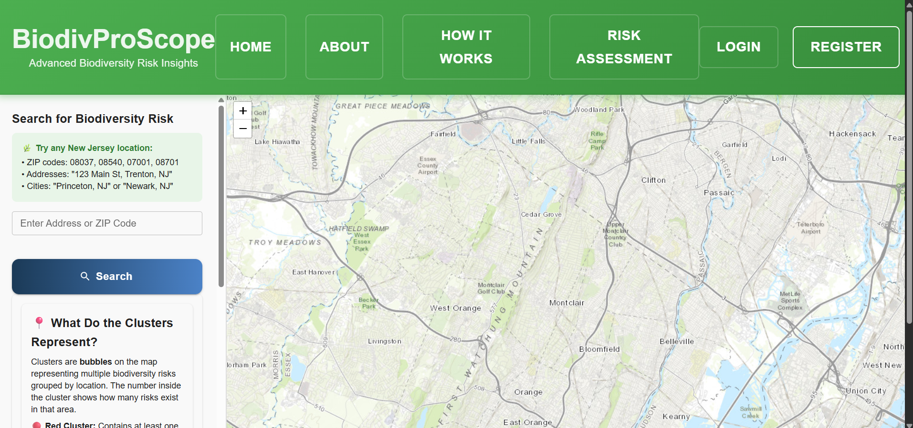
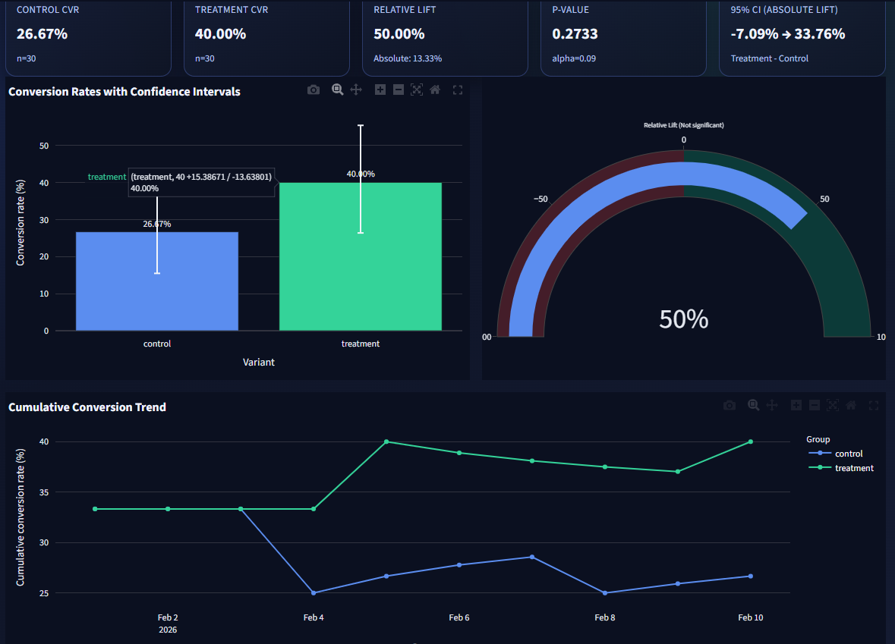
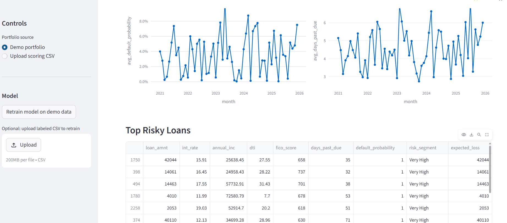

Data Analyst · BI Developer · Business Analyst
0
Years of analytics & BI experience
0
% gain in SQL query performance
0
% reduction in reporting effort via automation
Translating complex datasets into clear, decision-ready insights for executive teams.
Transforming raw data into measurable business outcomes.
Senior Data Analyst with 5+ years of experience across healthcare, banking, and fintech. I build scalable SQL pipelines, develop predictive models, and design executive dashboards that drive performance and reduce operational risk.
Healthcare
Utilization analytics, readmission risk modeling, and care-gap intelligence.
Banking
Portfolio performance, credit risk, and executive KPI scorecards.
Fintech
Fraud detection, payment analytics, and operational reporting.
Pattern
Signal
Narrative
Decision




SQL + Snowflake
KPI Dashboards
Predictive Narratives
Python + Pandas
Power BI + Tableau
A/B Testing
Time-Series Forecasting
Risk & Fraud Models
From raw datasets to executive insights with measurable impact
I design analytics systems that combine SQL, Python, and BI reporting to surface meaningful trends in customer behavior, payment performance, fraud signals, and operational risk. My work spans ad-hoc analysis, cohort modeling, experimentation, time-series forecasting, and production-ready dashboard design.
I collaborate with executives, product teams, and engineering stakeholders to translate complex datasets into clear decisions, scalable reporting workflows, and governance-aligned data products.
Healthcare Analytics
Member retention tracking, claims intelligence, readmission risk modeling, and utilization trend analysis.
Banking & Fintech
Fraud monitoring, chargeback patterns, transaction behavior analysis, and loan default risk insights.
Automation & Governance
Python pipelines, ETL validation, HIPAA/CAR compliance support, and large-scale report automation.
Tools, platforms, and methods I use daily
Programming & Data
PythonSQLPandasNumPyJupyterScikit-learnXGBoostStatsmodelsSciPyImbalanced-Learn
Visualization & Dashboards
StreamlitPlotlyMatplotlibSeabornLeaflet.jsBootstrapJinja2
Web Apps & APIs
FlaskFastAPISQLAlchemyREST APIsAuthentication / RBACRenderVercelStreamlit CloudGit & GitHub
Databases
PostgreSQLMySQLSQL ServerSnowflakeOracleSchema DesignQuery Optimization
Machine Learning & Modeling
ClassificationRegressionFeature EngineeringCredit Risk ScoringFraud AnalyticsAnomaly DetectionRule + ML HybridsModel Deployment (FastAPI)
Analytics & Forecasting Methods
Exploratory Data AnalysisHypothesis TestingA/B TestingPower & Lift AnalysisTime Series (ARIMA, SARIMA, Prophet)Seasonality DecompositionCohort AnalysisGeospatial AnalyticsStatistical Storytelling
Interactive projects and recent GitHub builds
Latest · GitHub
Bioscope · Biodiversity Risk Assessment
Geospatial compliance assistant for New Jersey businesses. Scores ecological risk by location using a curated species and habitat database, surfaces mitigation recommendations, and renders interactive maps so non-technical users can act on findings instantly.
PythonFlaskPostgreSQLLeaflet.jsGeospatial AnalyticsREST APIVercel
Latest · GitHub
Student Management System
Modern, role-aware academic operations platform handling registration, course management, grade entry, and analytics on student performance — built around a relational schema with secure auth and a polished gradient UI.
PythonFlaskSQLAlchemyMySQLJinja2BootstrapAuthentication
Latest · GitHub
Airbnb NYC Listings · EDA Studio
Streamlit web app analyzing 39K+ NYC Airbnb listings end-to-end: pricing distributions, neighborhood & room-type demand, geographic heatmaps, and host concentration patterns — packaged for recruiters and market analysts.
PythonPandasNumPyStreamlitPlotlySeabornSQLEDAGeo Analytics
Latest · GitHub
Tax Tracker System
Flask-based tax tracking application that lets businesses log company tax records, monitor pending payments, and audit financial activity with role-based access — modelled on real CFO/finance-team workflows.
PythonFlaskMySQLSQLAlchemyRBACJinja2BootstrapRender Deploy
Latest · GitHub
Healthcare Claims Intelligence Dashboard
Operational claims dashboard surfacing denial rates, payer mix, processing turnaround, and a readmission-risk API. Built to help medical operations teams act on outliers, monitor SLA breaches, and prioritize follow-ups.
PythonFastAPIStreamlitPandasScikit-learnSQLHealthcare AnalyticsREST APIRender Deploy
Latest · GitHub
Banking · Loan Default Prediction
End-to-end credit risk system: feature-engineered loan applications, trained gradient-boosted classifier with calibrated probabilities, exposed via FastAPI, and visualized through a Streamlit dashboard for risk officers.
PythonScikit-learnXGBoostFastAPIStreamlitPandasFeature EngineeringCredit RiskModel Deployment
Latest · GitHub
Fintech Fraud Detection & Monitoring
Hybrid transaction-monitoring engine that fuses deterministic rules (velocity, geo, MCC, device) with an ML scoring layer to triage fraud in near real time, plus an alert workflow for analyst review and feedback loops.
PythonScikit-learnPandasRule EngineAnomaly DetectionImbalanced LearnFraud AnalyticsRisk Scoring
Latest · GitHub
Time-Series Forecasting · Business Metrics
Forecasting studio that benchmarks classical ARIMA/SARIMA against ML regressors on sales & demand series. Includes seasonality decomposition, residual diagnostics, MAPE/RMSE comparison, and CSV-exportable forecasts.
PythonStatsmodelsARIMASARIMAProphetScikit-learnStreamlitPlotlyTime Series
Latest · GitHub
A/B Testing Analytics Dashboard
Interactive experimentation workbench supporting uploaded experiment data, synthetic simulation, and Kaggle datasets — runs frequentist tests, computes power & lift, and translates p-values into plain-English decisions.
PythonStreamlitSciPyStatsmodelsPlotlyPandasHypothesis TestingPower AnalysisExperimentation
GitHub
IPL Data Visualization (2008–2017)
Decade-long deep dive into Indian Premier League cricket data — toss impact on win-rate, venue advantage, run-rate dynamics, top performers, and statistical signals behind nail-biting finishes, all rendered through narrative visuals.
PythonJupyterPandasNumPyMatplotlibSeabornStatistical AnalysisStorytelling
Professional journey across analytics & BI
Senior Data Analyst
Aug 2024 - Present- Engineered SQL transformations across Snowflake, Oracle & SQL Server spanning 120M+ member records, powering ad-hoc and validated reporting for clinical and operations teams.
- Designed cohort & utilization analyses that lifted member retention by 18% and surfaced 30K+ care-gap cases/month for proactive outreach.
- Automated recurring reporting in Python + Power BI, cutting report delivery time by 55% and saving the team an estimated 160 hours/quarter.
- Built predictive models for readmission risk & medication adherence with Scikit-learn, reaching AUC 0.87 and reducing 30-day readmissions by 12% in pilot cohorts.
- Refactored heavy queries and rewrote indexing strategy, improving SQL execution performance by 45% and slashing dashboard load time from 42s → 9s.
- Partnered with 8 cross-functional stakeholders (clinical, product, compliance) to ship HIPAA-aligned data products and governance documentation.
Data Analyst
May 2021 - Aug 2023- Analyzed 2M+ daily transactions across payment gateways and bank integrations to lift processing success rate by 3.4 percentage points.
- Shipped Tableau & Power BI dashboards for fraud trends, merchant onboarding, and SLA monitoring used by 15+ business stakeholders daily.
- Designed Oracle & PostgreSQL ETL pipelines that brought insight latency from 24 hours → under 2 hours, enabling near real-time ops.
- Deployed clustering & forecasting models for merchant segmentation and churn — projected to retain ~$1.2M ARR in at-risk accounts.
- Cut report generation time by 40% through SQL tuning, partitioning, and indexing — adopted as a team-wide best practice.
- Mentored 3 junior analysts on SQL optimization, dashboard design, and stakeholder communication.
Data Analyst
Jan 2020 - May 2021- Analyzed customer, credit, and deposit data across a $3B+ loan portfolio to support origination, delinquency tracking, and risk reviews.
- Built executive dashboards & scorecards in Power BI / Excel for financial KPI monitoring — adopted by 5 leadership reviews per month.
- Implemented SQL + Python analyses for fraud detection & anomaly screening, flagging $480K+ in suspect activity within the first six months.
- Trained logistic regression & decision-tree models for churn & retention, improving target-customer recall by 22% over the legacy heuristic.
- Automated month-end reporting with VBA + stored procedures, compressing the close cycle by 3 business days every quarter.
Education
Master of Science in Data Analytics
Montclair State University, USA · May 2025
Frequently asked questions
Who is Rahul Ega in one line?
A Senior Data Analyst with 5+ years of hands-on experience turning messy enterprise data into clear, decision-ready stories — across healthcare (Optum), payments (Fiserv), and banking (Wells Fargo). I treat every dataset like a narrative waiting to be told.
What kind of problems do you actually solve?
Anything where the answer is hiding in data: building scalable SQL pipelines, designing executive KPI dashboards, running A/B tests, forecasting demand, scoring risk & fraud, and shipping Python/ML models that move a metric — not just a slide.
Which tools and stacks do you work with daily?
SQL (Snowflake, Oracle, SQL Server, PostgreSQL, MySQL), Python (Pandas, NumPy, Scikit-learn, Statsmodels, FastAPI, Streamlit), BI (Power BI, Tableau, Looker, Excel), and ETL/automation (SSIS, VBA, Airflow basics) — plus Git, Render, and Vercel for deployment.
What domains have you delivered in?
Healthcare (claims intelligence, readmission risk, member retention), Banking & Fintech (loan-default prediction, fraud monitoring, KPI scorecards), and Product/E-commerce style analytics (experimentation, forecasting, EDA).
What measurable impact have you driven?
+45% SQL query performance, −55% reporting effort through automation, +18% member retention via cohort outreach, $480K+ in suspect activity flagged at Wells Fargo, and a fraud-monitoring engine combining rule + ML scoring used in active testing.
How do you approach a new analytics problem?
I anchor on the business question first, then go: data audit → exploratory analysis → hypothesis & model → dashboard or API → stakeholder readout. Every deliverable answers three things — what happened, why it happened, and what to do next.
What kind of roles are you open to?
Data Analyst, Senior Data Analyst, Business Intelligence Developer, Analytics Engineer, and Product/Decision Science roles. Open to full-time, contract, hybrid, or remote in the US — currently authorized to work in the United States.
How do I get in touch or hire you?
Email rahulega695@gmail.com, call/WhatsApp +1 (203) 804-1989, or message me on LinkedIn. The Download CV button up top has my latest résumé — replies usually go out within a day.
Let's build something data-driven
Open to analytics, BI, and data engineering roles where technical depth and measurable business impact go hand in hand.